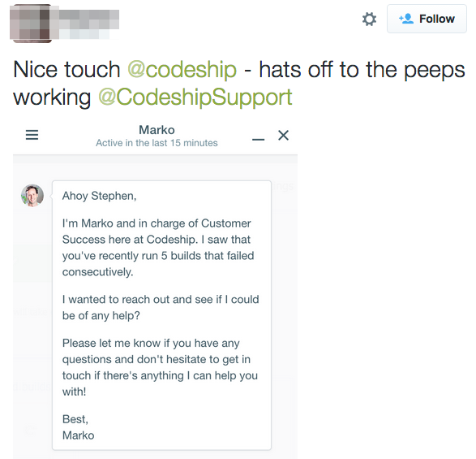

Codeship is a hosted Continuous Delivery platform that helps software companies develop better products faster, by taking care of the testing and release process.
The team in charge of conversions at Codeship is dedicated to creating a smooth onboarding experience, which they know to be crucial in converting users and growing the company. For this reason, they want to proactively reach out to users experiencing difficulty during onboarding.
Prior to using MadKudu, Codeship already used sophisticated messaging campaigns based on complex, calculated fields driven by user behavior. But they still had users getting stuck while learning to use the product. Some of those users would approach the Codeship support team for help, but many more would suffer in silence and just leave. Codeship's messaging tool, Intercom, was used for reactive measures to address this problem. To be proactive, Codeship needed to overcome the current shortcomings of the data distribution to identify a struggling user and immediately offer to help while there was still a chance.
It took only a few minutes for Codeship to connect Intercom and Mixpanel with MadKudu.
MadKudu analyzed the Mixpanel data and identified several moments, or combinations of events, that predicted a user was struggling and about to leave. MadKudu's data science discovered that consecutive unsuccessful build attempts by a Codeship user during onboarding strongly predicted the user was about to leave. And more precisely, it identified the significant threshold as 5 consecutive failed builds within 24 hours. This is an example of what we call the "I'm done trying" moment. The moment most correlated to a user not converting during onboarding.
Armed with this knowledge, the Codeship team was able to easily configure a campaign for those users within Intercom, using the new MadKudu trigger. So now, whenever a Codeship user fails 5 times in 24 hours with a build, they are met with a friendly and automated offer to help on behalf of Codeship Support.
And MadKudu's machine learning is constantly searching for any other "I'm done trying" moments, and it tells Intercom when they happen.
The new offer to help campaign saw exceptional results, with an 80% viewed rate and a 19% response rate. Most importantly, 72% of struggling users experienced an increase in successful Codeship builds, which put them back on the right track to adoption. This smart campaign not only helped with the conversion rate, but also delighted users who quickly expressed their appreciation for the timely help with messages like the one below!
